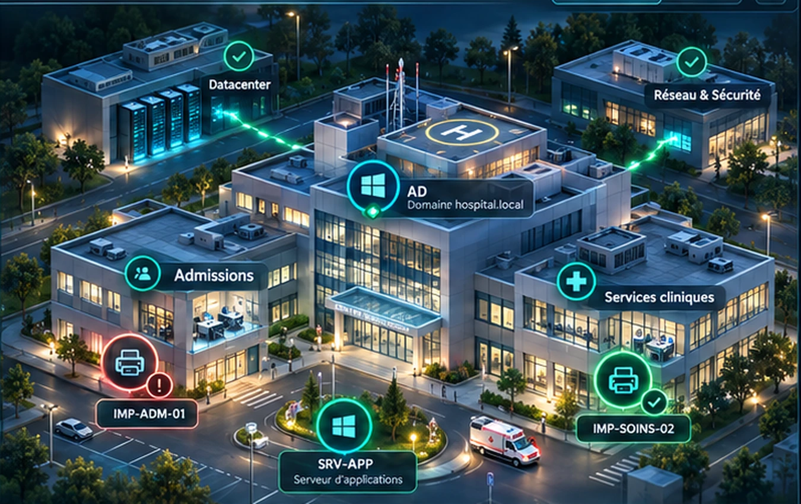

VOTRE ARSENAL
Un réseau. Trois façons d'intervenir.Choisissez votre environnement
SERVICE DES INCIDENTS · TICKET
Poste d’intervention EN DIRECT
01 / 06
INCIDENT #001● PRIORITÉ HAUTE
Chargement de la mission…
DEMANDEURService des admissions
PERSONNES IMPACTÉES12 utilisateurs
ENVIRONNEMENTLINUX / BASH
DIFFICULTÉINITIATION
OBJECTIFRestaurer le service
PROCÉDURE D'INTERVENTION
INFRASTRUCTURE HQ · SITE HOSPITALIERGH PORTES DU LÉMAN / CAMPUS CENTRAL

EN LIGNE INCIDENT CLIQUEZ POUR INSPECTER
100 %
SRV-APP · Service applicatifIncident détecté — sélectionnez un nœud du réseau pour l'inspecter.
ALERTETERMINAL LINUXSIMULATEUR LOCAL · NON RÉEL
↑↓ HISTORIQUEEntrée EXÉCUTER● MODE SÉCURISÉ
PARCOURS OPÉRATEUR
Votre carrière commence ici
Trois spécialités, de l'initiation aux incidents critiques. Parcourez la feuille de route des 300 niveaux.
◈
JOURNAL D'INTERVENTION
◉
PROGRESSION OPÉRATEUR
GRADE ACTUELTECHNICIEN STAGIAIRE
0 XP0 / 6 MISSIONS TERMINÉESPROCHAIN GRADE : 250 XP
◎
QUALITÉ D’INTERVENTION
—points
Commandes exécutées0
Erreurs0
Indices0
Durée00:00
Score calculé à la résolution : précision, autonomie et rapidité. Les missions rejouées ne redonnent pas d’XP.